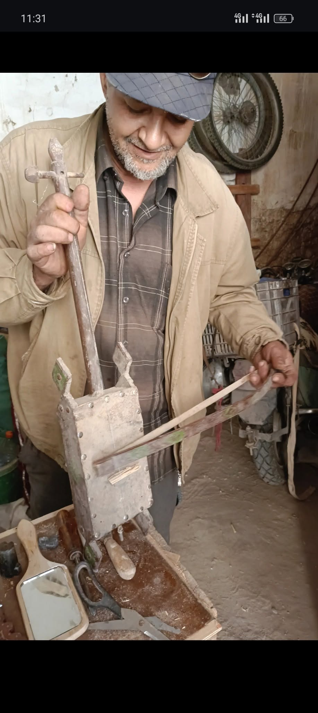

Le joueur de Rbab
Dans l’atelier trempé
de poussière
et de vent,
Un homme sourit,
les mains pleines
de mémoire.
Sous ses doigts,
le bois chante
lentement,
Et la corde ancienne
frissonne d’espoir.
Le Rbab,
frêle
et fier,
renaît
dans la lumière,
Sorti du fer,
du cuir,
du sable
et du temps.
Chaque note
qui monte
est une prière,
Un souffle du désert,
doux
et brûlant.
Son regard se perd
dans le fil du passé,
Là où dansaient
les voix des ancêtres.
Chaque son qu’il tire
est un fil tressé,
Entre l’homme,
la terre,
et les êtres.
Le silence s’incline,
humble et profond,
Quand s’élève le chant
de la fibre tendue.
Dans cette pièce
aux outils de plomb,
C’est l’âme du monde
qu’il a reconnue.
Et l’on jurerait
qu’en ce moment si clair,
Le vent s’arrête,
le soleil s’invite,
Pour écouter,
dans un souffle d’air,
Le joueur de Rbab —
poète et artisan du rite.
Djamel Metref
At Yenni le 20 octobre 2025

← Tous les poèmes
Le joueur de Rbab
Carnets de voyages · Mémoire et transmission